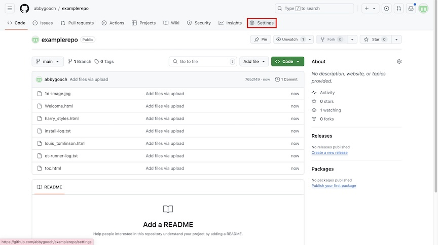
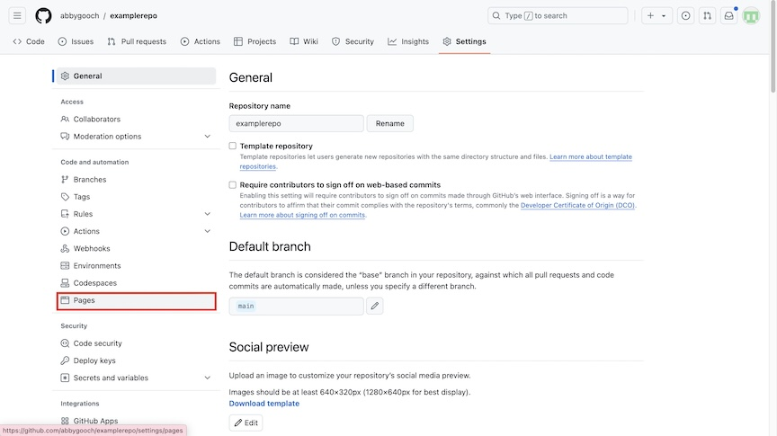
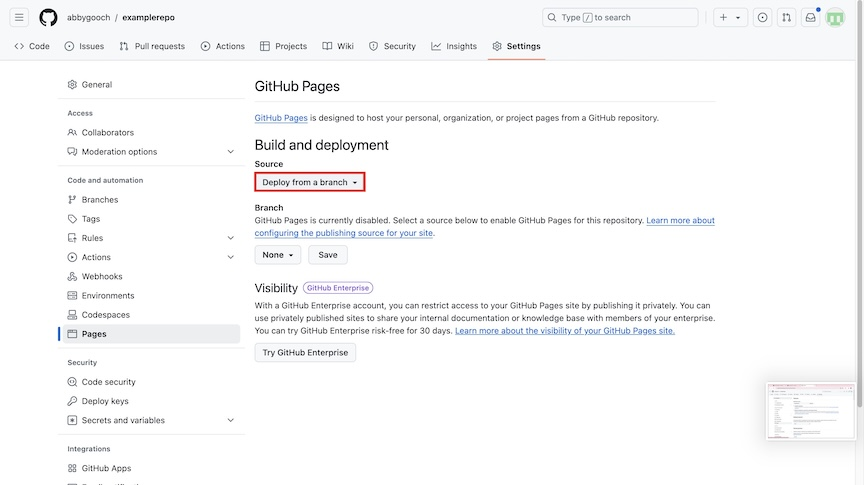
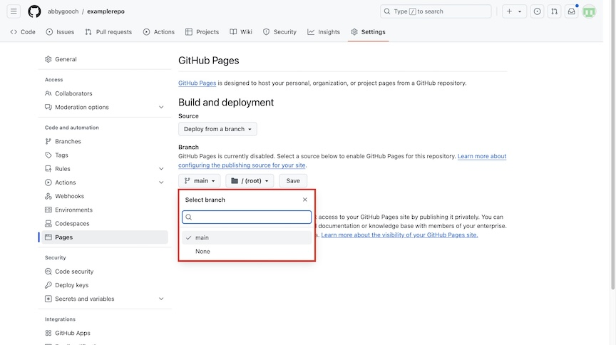
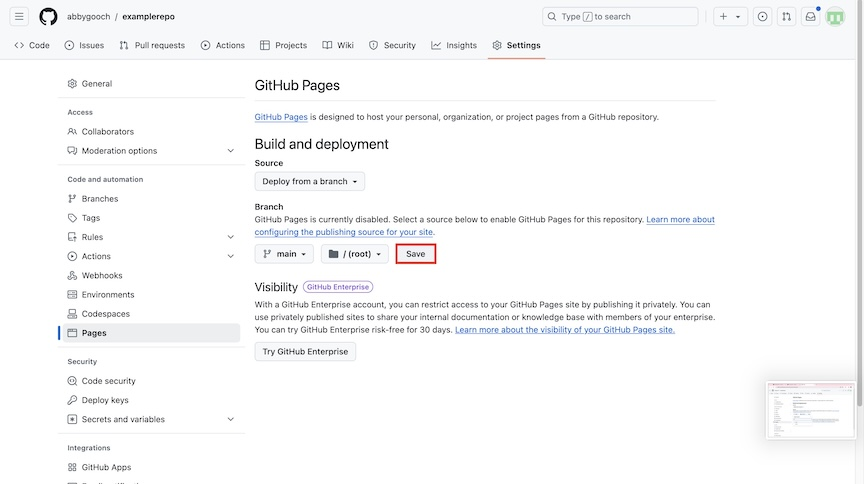
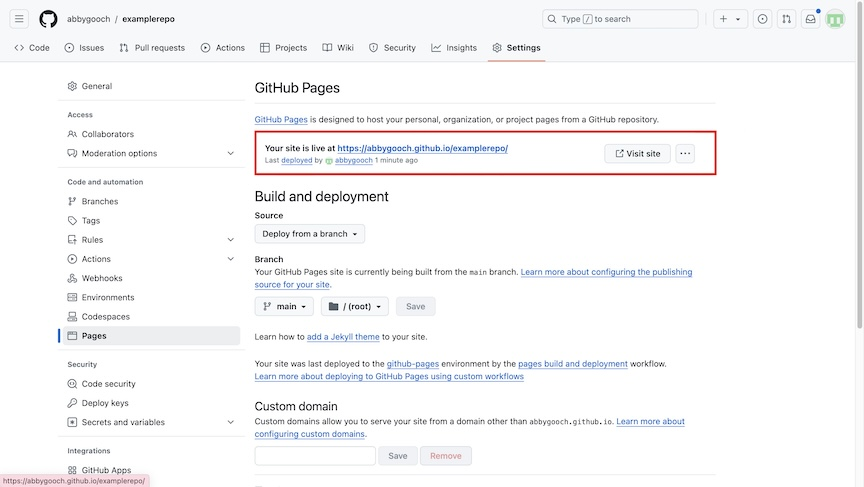

The last step is to view your files as a website using GitHub Pages! This task will guide you through that process.
- Within your project repository on GitHub, click the "Settings" tab on the top of the screen.
Figure 1. Click "Settings".
- In the "Code and automation" section, click "Pages".
Figure 2. Click "Pages".
- Under "Build and Deployment", ensure "Deploy from a branch" is selected in the Source drop down box.
Figure 3. Ensure "Deploy from a branch" is selected.
- Select your branch from the drop down menu.
In most cases, your branch will be called "main". Your branch name is shown on the "Code" page of your GitHub repository.
Figure 4. Select your branch.
- Click the "Save" button to the right of the branch selection drop down.
Figure 5. Click "Save".
- Once saved, your GitHub Pages site will begin being built from your branch. Wait a few minutes while this happens.
- Once your site is loaded, a link will be displayed at the top of the Pages page.
Figure 6. Your website link will be displayed when ready!
- Click the link and you will be directed to your GitHub Pages website!
You've created a website with a shareable link!